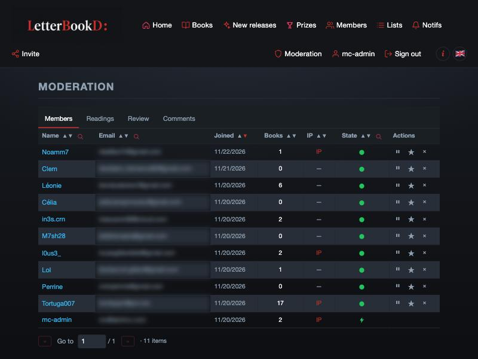

Moderation — MembersAdmin only
Why it exists: Admin view. An overview of every account in the club: who is active, who is an admin, who was flagged by IP address, and actions to suspend, promote or delete a member. Emails are blurred in this documentation; they appear in clear text in the app.

Walkthrough
There are four tabs at the top: Members (here), Reads, Reviews and Comments. The members table lists, for each account: Name (username, clickable to open the profile), Email (clear text in the app), Joined (date), Books (number of reads), IP (red 'IP' badge if a suspicious IP address was recorded, a dash otherwise), and Status (green dot = active, green bolt = admin).
The Actions column has three icon buttons per row: pause (suspend), star (grant or remove admin rights), and cross (delete). Each column can be sorted (▲ ▼) and filtered with the magnifier icon, which opens the filter modal.
Action chains
Each row describes a trigger in the UI, the modal or form it opens, and the resulting effect.
| Trigger | Modal / Fields | Effect |
|---|---|---|
| Members / Reads / Reviews / Comments tabs | Navigation via ?tab=… | Switches the view without reloading the whole page (standard navigation). |
| ▲ ▼ arrows in a column header | — | Sorts the column ascending (▲) or descending (▼). The sort is kept in the URL. |
| Magnifier icon in a column header (opens the Filter modal) | Modal with a text field 'Filter — <column>' and 'Apply' / 'Clear' / 'Cancel' buttons. | Filters the table on the chosen column. 'Clear' removes the filter. Several columns can be filtered together. |
| Pause (||) button on a member row | Confirmation POST form. | Suspends the account: the member can no longer log in or post. It can be reactivated later with the same button. |
| Star (☆ / ★) button on a member row | POST form. | Grants or removes admin rights (is_staff and is_superuser). The green bolt in the Status column updates immediately. An admin who removes their own rights loses access to moderation. |
| Cross (×) button on a member row | Confirmation POST form. | Permanently deletes the account and all its data (reads, reviews, comments, lists, invitations). Irreversible. |
| Table footer: 'Go to [n] / X' and arrows | Simple pagination. | Navigates between result pages. |